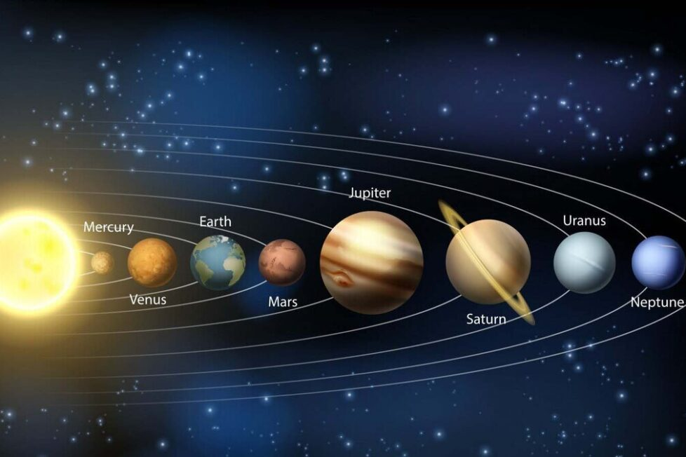

El Universo es todo, sin excepciones. Materia, energía, espacio y tiempo, todo lo que existe forma parte del Universo.
También se le llama Cosmos. Las ciencias que lo estudian son varias, en especial dos: la astronomía y la cosmología.
El Universo es muy grande, pero quizás no infinito. Si lo fuera, habría infinita materia en infinitas estrellas, y no es así. Al contrario: en cuanto a la materia es, sobre todo, espacio vacío. Hay quien incluso afirma que el Universo en el que vivimos no es real, que es un holograma.
El Universo conocido contiene galaxias, cúmulos de galaxias y estructuras de mayor tamaño llamadas supercúmulos, además de materia intergaláctica. Todavía no sabemos con exactitud su magnitud, a pesar de la avanzada tecnología disponible en la actualidad. La materia no se distribuye de manera uniforme, sino que se concentra en lugares concretos: galaxias, estrellas, planetas... Sin embargo, se supone que el 90% de lo que existe es una masa oscura, que no podemos observar.
